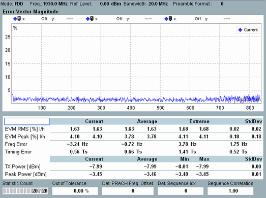

Views EVM, Magnitude Error, Phase Error
This section applies to the following detailed views:
- "Error Vector Magnitude"
- "Magnitude Error"
- "Phase Error"
Each of these single-preamble views shows a diagram and a statistical overview of results.

Error Vector Magnitude view
The diagram shows the EVM / magnitude error / phase error in all preamble subcarriers. For preamble format 0 to 3, there are 839 subcarriers with a spacing of 1.25 kHz. For preamble format 4, there are 139 subcarriers with a spacing of 7.5 kHz. The values are RMS-averaged over the samples in each subcarrier.
For a description of the table rows, see "View TX Measurement".
For table columns and other elements, refer to "Common View Elements".